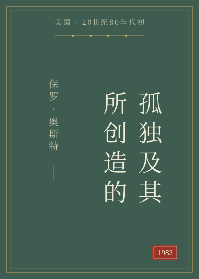
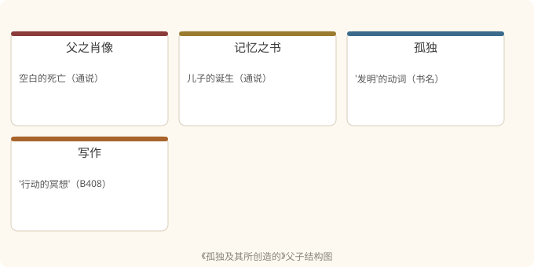

孤独及其所创造的
一、基本信息
| 作者 | 保罗·奥斯特 |
|---|---|
| 成书/出版 | 1982年（Britannica B408：The Invention of Solitude (1982)——'both a memoir about the death of his father and a meditation on the act of writing'） Paul Auster — Encyclopaedia Britannica（百科全书） |
| 国别/地区 | 美国 |
| 时代 | 现当代 · 20世纪80年代初 |
| 体裁 | 回忆录/散文 |
| 语言 | 英语 |

《孤独及其所创造的》父子结构图（主题·结构图）
二、创作背景
Britannica（B408）：'both a memoir about the death of his father and a meditation on the act of writing'（父亡回忆+写作冥想）。
Britannica（B408）：奥斯特——'often concerned with the search for identity and personal meaning'。
题材（通说待核）：《孤独及其所创造的》两部——'父之肖像'与'记忆之书'。
三、内容脉络
（通说待核）第一部：'父之肖像'——父亲的死亡与空白。
（通说待核）第二部：'记忆之书'——儿子的诞生。
四、主要人物表
| 人物 | 身份 | 说明 |
|---|---|---|
| 奥斯特/父亲 | 回忆的双方 | （B408 语境） |
五、主题与艺术特点
- '父亡回忆+写作冥想'（B408）。
- '孤独'的发明（书名语境——通说待核）。
- '身份与个人意义的追寻'（B408 交叉）。
六、影响与评论
- Britannica：'both a memoir about the death of his father and a meditation on the act of writing'（B408）。
Paul Auster — Encyclopaedia Britannica（百科全书） - Britannica：《纽约三部曲》为成名作（B408 交叉）。
Paul Auster — Encyclopaedia Britannica（百科全书）
七、阅读建议
难点
- 两部结构（父/子）。
- '偶然'与'记忆'的哲学（通说待核）。
- 《孤独及其所创造的》中译本（人民文学等——通说待核）。
- 英文原版。
奥斯特散文首选；与《纽约三部曲》对读。
八、待核实
- 两部标题核对（通说）。
- 1982年出版（Sun说）待核。
- '父亲的空白'细节待核。